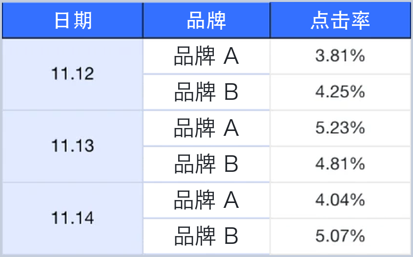
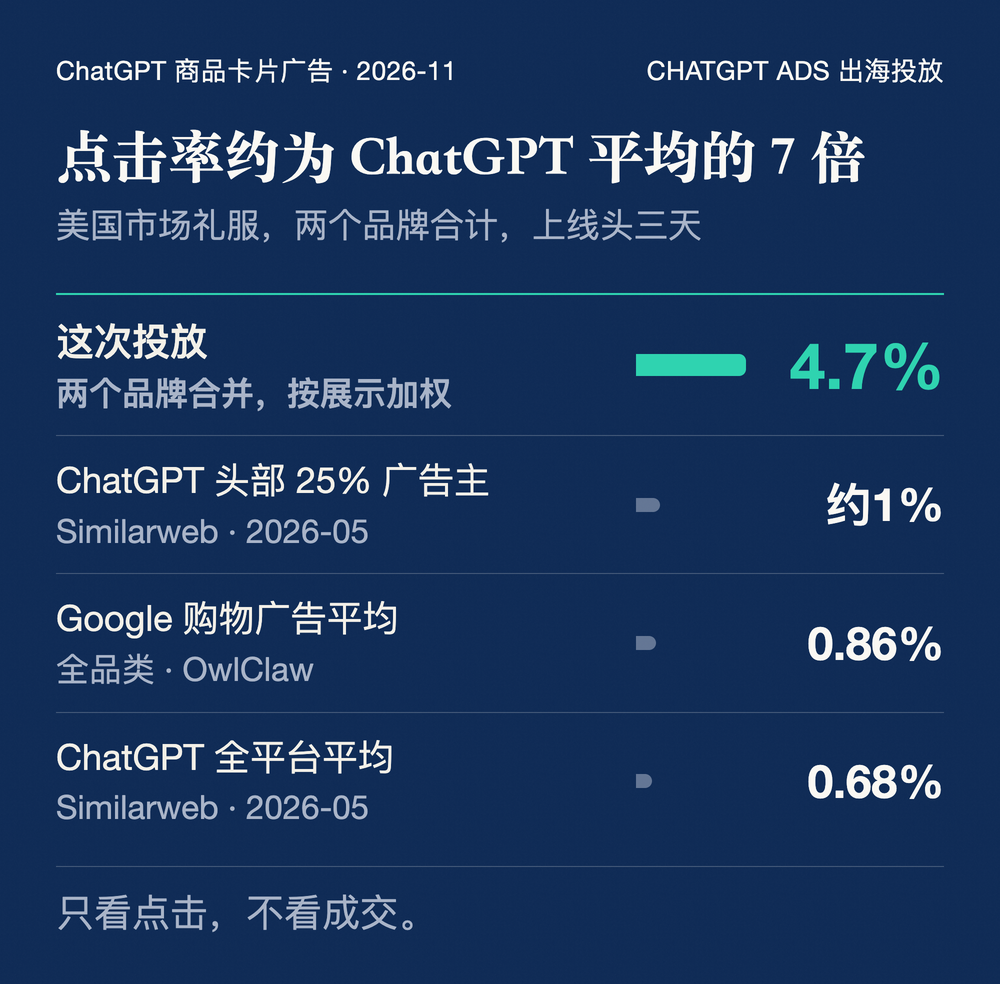

礼服卖家投 ChatGPT：点击率是平台平均的 7 倍
三句话版
- 一个做美国市场的婚礼和派对礼服品牌，11 月 12 日起用商品卡片在 ChatGPT 投广告。上线头三天，两个品牌合计点击率 4.7%，单日在 3.8% 到 5.2% 之间。
- 同一把尺子上，ChatGPT 全平台平均约 0.68%，头部 25% 的广告主约 1%（Similarweb，2026 年 5 月）；Google 购物广告整体平均约 0.86%。
- 点击率高不等于能赚钱。单次点击约 0.9 到 1.5 美元，在 ChatGPT 里算低，但比 Google 购物和 Meta 投服装贵一倍左右。三天看不出成交，至少看满两周再加预算。
2026-11-16 · Stan Lu · ChatGPT Ads 更新解读 · 自有投放 2026-11-12 至 11-14；行业基准 2026-11-15 抓取
礼服这种"先问再买"的品类，在 ChatGPT 的商品卡片里点击率很高；但点击率只回答"有没有人看"，回答不了"值不值得投"。
这篇只讲一组真实投放的前三天。品牌名、花费和流量规模都不公开，只放点击率；行业数字全部写明出处。
 OpenAI 发给广告主的「ChatGPT Ads Product Update」邮件，约 2026-09-30 发出，经 Search Engine Roundtable 当日转载；2026-10-20 抓取。第一条就是商品卡片（product feed）活动可以批量建。
OpenAI 发给广告主的「ChatGPT Ads Product Update」邮件，约 2026-09-30 发出，经 Search Engine Roundtable 当日转载；2026-10-20 抓取。第一条就是商品卡片（product feed）活动可以批量建。
一、投了什么，数字是多少
- 品牌：美国市场的独立站，卖毕业舞会、伴娘、婚礼宾客、正式场合穿的礼服。店里大多数礼服标价 110 到 150 美元。
- 形式：商品卡片。广告不是一段文字，而是带图、带价格的商品，出现在用户问"伴娘裙怎么选"这类对话旁边。
- 设置：美国，按点击计费，两个品牌各建一个活动，落地页直接是商品页，链接带 UTM 参数回传来源。
前三天的点击率：

日报截图：只截日期和点击率，品牌名换成 A、B。合计 4.7% 是总点击除以总展示，不是六个格子的简单平均。
两个品牌合计 4.7%。品牌 A 约 4.5%，品牌 B 约 4.8%；最低的一天 3.8%，最高的一天 5.2%。
二、放在哪把尺子上量

自制图，数字出处见文末。
- 跟 ChatGPT 平均比：Similarweb 2026 年 5 月统计，ChatGPT 广告整体点击率约 0.68%，头部 25% 约 1%，最好的广告主约 5.4%。这组投放落在头部，但不是最高。
- 跟 Google 购物广告比：Google 购物广告也是带图带价的商品卡片。OwlClaw 的基准是整体平均约 0.86%，超过 1.2% 算好；服装类一个较老的基准是 0.76%。同样的形式，ChatGPT 这边约是平均的 5 倍。
- 跟 Meta 比：Lebesgue 统计客单价 100 到 200 美元的服装品牌，Meta 广告点击率中位数 2.46%。这边约是它的两倍，差距没有对 Google 那么大。
- 为什么高：我的判断是两条。一是礼服要挑款式、颜色、尺码，用户在对话里本来就在问"哪件合适"，商品卡片正好接上；二是 ChatGPT 上卖货的广告主还少，Graphite 的报告说零售电商广告主"基本缺席"，竞争的卡片不多。
三、点击花费只在 ChatGPT 里算低
两个品牌的单次点击花费分别约 0.9 美元和 1.5 美元。
- 在 ChatGPT 里算低：公开报道的电商卖货投放大多在 1.7 到 4.4 美元一次点击。
- 出了 ChatGPT 反而偏贵：Google 购物广告的服装大约 0.45 到 0.7 美元一次点击；Meta 投服装大约 0.4 到 0.8 美元，客单价 100 到 200 美元这一档约 0.5 美元。
所以别把这组数字讲成"ChatGPT 比 Google 便宜"。准确的说法是：每次点击贵一倍左右，点击率高好几倍。
四、还不能说的：能不能赚钱
三天数据只看点击，看不了成交。判断能不能赚钱，先算一个数：
保本需要的转化率 = 单次点击花费 × 目标回报倍数 ÷ 客单价
按客单价 130 美元算：
| 单次点击约 | 保本转化率 | 要两倍回报 |
|---|
| 品牌 B | 0.9 美元 | 约 0.7% | 约 1.4% |
| 品牌 A | 1.5 美元 | 约 1.2% | 约 2.3% |
参照：Lebesgue 统计客单价 100 到 200 美元的服装品牌，Meta 广告带来的转化率中位数 1.33%。品牌 B 的保本线在它下面，有机会；品牌 A 的保本线贴着它，要两倍回报得做到 2.3%，要看落地页能不能接住。
还有两件事会改这个结论：
- 伴娘裙常常一单好几件，客单价会比单件标价高，保本线跟着降。
- 公开报道里，巴西一组 ChatGPT 投放第四周的转化率比第一周掉了 88%；同一个广告主同时投 ChatGPT 和 Google 的对比里，ChatGPT 的转化率也偏低。前几天的好数字不能直接外推。
五、礼服卖家现在怎么投
- 用商品卡片，不用纯文字广告。 礼服靠图说话，卡片自带图和价格。
- 每个品牌单独建活动。 两个品牌的点击花费差了六成，混在一起就看不出谁该加钱。
- UTM 参数先接好再上线。 来源、活动、广告组都带上，否则两周后只有点击，没有成交可看。
- 至少看满两周再加预算。 11 月是毕业舞会的淡季，1 到 5 月才是旺季；现在的数字是淡季的数字。
常见问题
ChatGPT 广告的平均点击率是多少？
Similarweb 2026 年 5 月的统计是约 0.68%，头部 25% 的广告主约 1%，最好的约 5.4%。据 Search Engine Journal 转述，OpenAI 帮助中心说目前没有跨广告主的基准。
礼服在 ChatGPT 投商品卡片，点击率能到多少？
本文这组美国市场礼服品牌的投放，上线头三天两个品牌合计 4.7%，单日 3.8% 到 5.2%。这是一组投放的早期数字，不代表品类平均。
ChatGPT 广告的点击比 Google 便宜吗？
在服装上不便宜。这组投放单次点击约 0.9 到 1.5 美元；Google 购物广告的服装约 0.45 到 0.7 美元，Meta 服装约 0.4 到 0.8 美元。它只比 ChatGPT 上其他公开的电商投放便宜。
怎么判断 ChatGPT 广告能不能赚钱？
用"保本转化率 = 单次点击花费 × 目标回报倍数 ÷ 客单价"算出门槛，再用 UTM 回传的真实成交去比。至少看满两周。
出处
OpenAI
报道与第三方数据（2026-11-15 抓取）
自有投放
- 前三天点击率与单次点击花费来自一组真实投放的日报（2026-11-12 到 11-14），只公开点击率。
推断
- "点击率高的两条原因""品牌 B 有机会、品牌 A 要看落地页""怎么投的四条"是我的判断，不是 OpenAI 原文。保本转化率按客单价 130 美元估算，实际客单价以店铺后台为准。